ウェブサイトの構造
まずは、ウェブサイト（Webページ）というものが一体何なのかを見てみましょう。
もっと複雑なサイトはいくらでもありますが、比較的シンプルな作りをしている本サイトを参考に説明します。
もう知ってるよ！という方は目次から「Neocitiesの使い方」まで飛ばしてOKです。
そもそも、ウェブサイトとは「インターネットにアップされていて、その住所を持っている人が見ることができるフォルダー」なのです。
フォルダーの基本的な構造はこちら：
- index.html
- （HTMLファイル）これがページの正体。実際に本講座のトップページも
index.htmlという名前です！ - style.css
- （CSSファイル）ページの見た目を変えられる便利グッズ。
とにかくこの二つのファイルさえあれば、ウェブサイトは成り立ちます。
この形はリトリンや無料版ピクページなどのようなシングルページサイトが作れますね。
ここにまたHTMLファイルを追加すると、ページを増やせます。
HTMLファイルとCSSファイルは、テキストファイル 〇〇.txt の名前を 〇〇.html と 〇〇.css に改名しただけのものです。
実はパソコンのメモ帳アプリだけで作れますが、本講座は後ほど紹介するNeocitiesの専用エディタを使用します。
そして住所（=アドレス）とはURLのことで、例えば本ページのURLはこちらですが：
https://cerealandchoccymilk.neocities.org/ja/kouza26/01.html
この .org 以降の /（スラッシュ）がフォルダーを表しています。
ピンとこない方はこのような図をイメージするといいかもしれません。
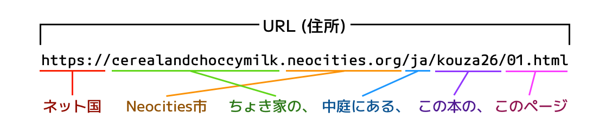
（画像説明）
- https://
- ネット国
- cerealandchoccymilk.neocities.org
- Neocities市 ちょき家の、
- /ja
- 中庭にある、
- /kouza26
- この本の、
- /01.html
- このページ。
この全てを合わせた物をURLと呼び、これがファイルの「住所」を表します。
Neocitiesの使い方
現在おすすめのサイト管理サービスは、管理人も愛用しているNeocities（通称「ネオシ」）です。
無料プランでも充分な機能があり、容量は1GBと少なそうに見えますがほとんどの場合は全く心配することはありません。
管理人のサイトはページ数がそこそこ多いですが、最大容量の4.7%しか使っていません。外部に保存している大量のイラストを合わせても50%程度です。
Neocitiesは英語のサービスですが、以下のガイド、設定一覧、そして必要であれば機械翻訳ツールなどを利用すれば英語が苦手でも操作できる……はず……！
（見落としや説明不足が発生する可能性があります。不明な点がありましたらご連絡ください！）
アカウント作成
それでは、サイトへの第一歩となるNeocitiesアカウントを作ってみましょう。
① Neocities.orgを開くと、このようなユーザー登録欄が出迎えてくれます。
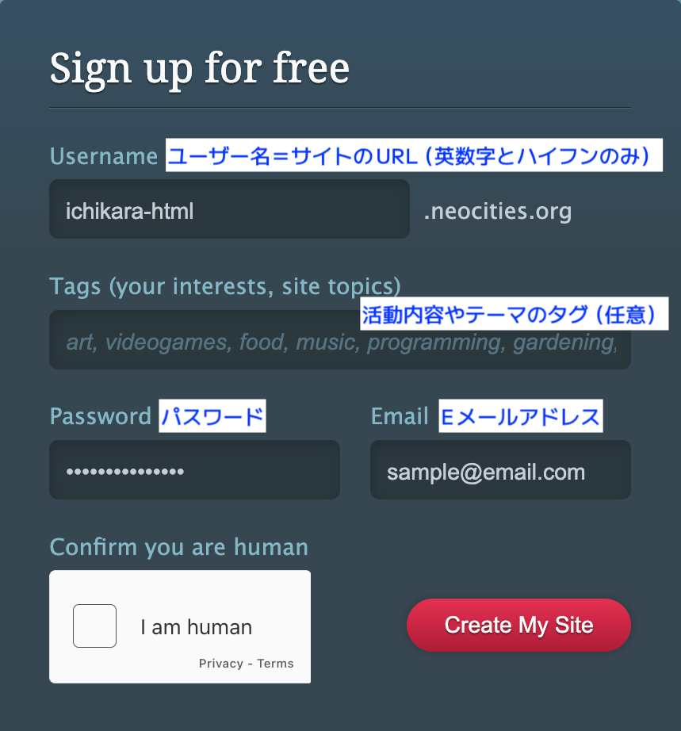
（画像説明）
- Username - [入力].neocities.org
- サイトのURLとなるユーザー名。英数字とハイフン（-）のみ。
- Tags (your interests, site topics)
- 活動内容やテーマのタグ（任意）
- Password
- パスワード
- Eメールアドレス
左下にCAPTCHA認証ボタン、右下に「サイトを作成する」ボタンがあります。
必要事項を入力して"Create My Site"をクリックします。
② 次はNeocitiesの利用ルールとEメール認証の画面が表示されます。
Neocitiesは個人が手作りしたHTMLサイトのためのサービスで、芸術作品、執筆、そして自己表現の場です。
Neocitiesを以下の用途に使用することを禁止します。
利用ルール（クリックで展開）
確認のメールが届くので、それに書かれたコードを入力するかリンクを開くことで認証できます。
届かない場合は迷惑メールを確認してから"Resend Confirmation Email"を押すと再送信されます。
アドレスを間違えた場合は正しいアドレスを入力して"Update Email Address"をクリックしてください。
③ メール認証が完了したら利用プラン選択の画面に移ります。
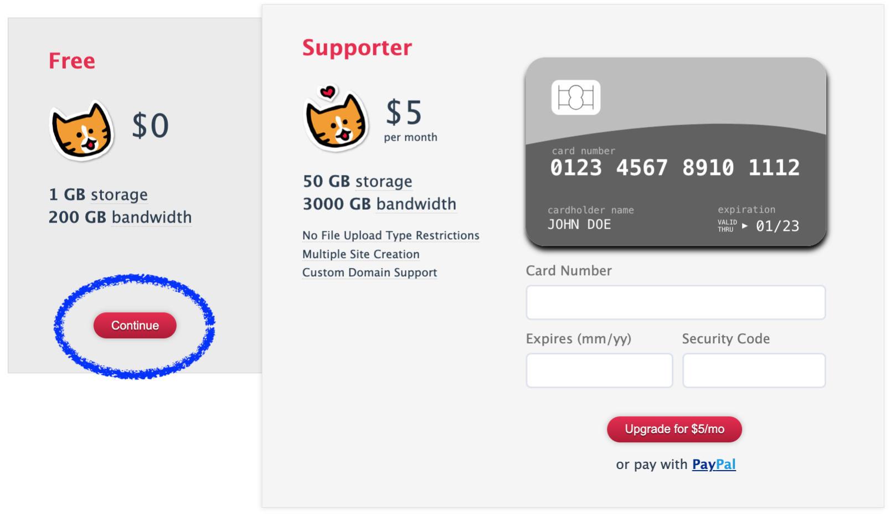
Neocitiesは広告を表示しない代わりに、サポーターの支援で資金を得ています。
今は左の無料プランを選択しましょう。もちろん、後からいつでもサポータープランに加入できます。
④ 次の画面は、上にNeocitiesのHTMLレッスン、中央にサイト編集画面、下に他サイト一覧を開くリンクあります。
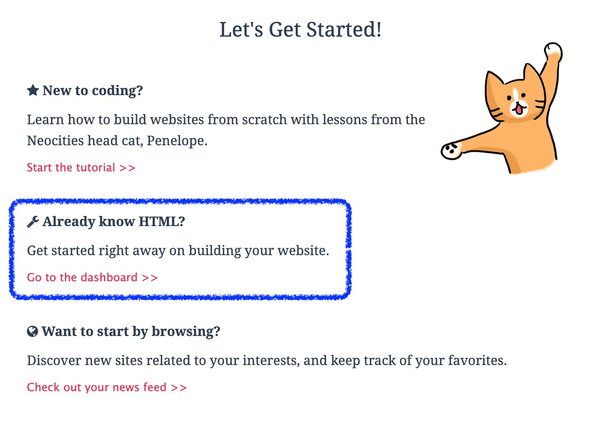
Neocitiesの公式レッスンはとても可愛くて分かりやすいのですが、全て英語なので一旦スルーして、中央のサイト編集画面に進みましょう。
⑤ サイト編集画面（ダッシュボード）に辿り着きました。既にファイルが数個揃っていますね。
以下はヘッダー、テキストエディタ、設定画面のメニュー説明となります。
所々に表記揺れが発生しています。分かりづらいようでしたら統一して作り直します。
分からなくなった時の一覧表として書いているので、不要な方は「②HTMLを打ってみよう」に進んでください。 現在執筆中です！しばらくお待ちください。
メニューボタン一覧
ヘッダー・アカウントメニュー
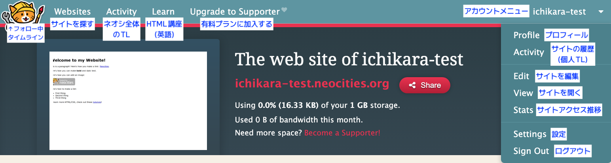
（画像説明・ヘッダー）
- 猫（Penelope）アイコン
- フォロー中サイトの更新タイムライン
- Websites
- サイトを探す
- Activity
- ネオシ全体のタイムラン（全サイトの更新）
- Learn
- HTML、CSS、Javascriptなどの講座や参考サイト（英語）
- Upgrade to Supporter
- 有料（サポーター）プランへの移行
- アカウント名
- アカウントメニュー
（画像説明・アカウントメニュー）
- Profile
- Neocities内のプロフィール
- Activity
- サイトの履歴（個人TL）
- Edit
- サイトを編集
- View
- サイトを開く
- Stats
- サイトアクセス推移
- Settings
- 設定
- Sign Out
- ログアウト
テキストエディタ
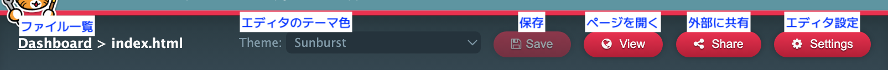
（画像説明）
- Dashboard
- ダッシュボード（サイト編集画面・ファイル一覧トップ）
- Theme
- エディタのテーマ色
- Save
- 保存
- View
- ページを開く
- Share
- 外部に共有
- Settings
- 設定
テキストエディタ設定
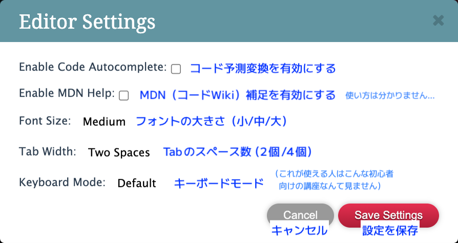
（画像説明）
- Enable Code Autocomplete
- コード予測変換を有効にする
- Enable MDN Help
- MDN（コードWiki）補足を有効にする（使い方は分かりません……）
- Font Size - Small/Medium/Large
- フォントの大きさ（小・中・大）
- Tab Width - Two Spaces / Four Spaces
- Tabのスペース数（スペース2個分・4個分）
- Keyboard Mode
- キーボードモード
※これが使える人はこんな初心者向け講座なんて見ません。
Defaultにしておいてください。 - Cancel / Save Settings
- キャンセル・設定を保存
テキストエディタをスマホやタブレットで利用していると、環境によっては文字を打つ時に画面が移動してしまうバグがあります。
バグが発生した場合、ブラウザの「デスクトップ表示」をONにすると改善されます。（こちらで切り替え方法を確認できます）
設定画面一覧
※アカウント設定の詳細（パスワード変更など）は説明不要なので省略
アカウント設定（サイト一覧画面）
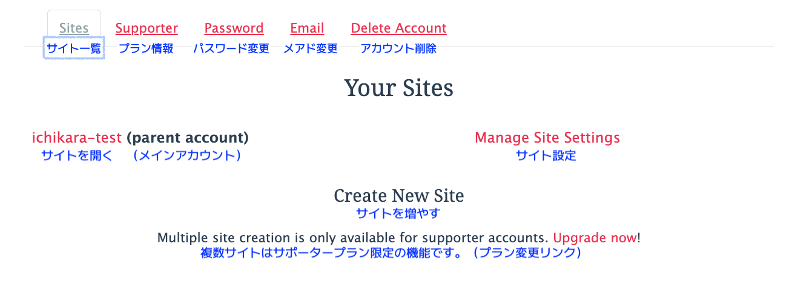
（画像説明・アカウント設定メニュー）
- Sites
- サイト一覧
- Supporter
- プラン情報
- Password
- パスワード変更
- メールアドレス変更
- Delete Account
- アカウント削除
（画像説明・サイト一覧画面）
- Your Sites
- サイト一覧
- [username] (parent account)
- 【ユーザー名】（メインアカウント）ユーザー名をクリックするとサイトが開かれます
- Manage Site Settings
- サイト設定
- Create New Site
- サイトを増やす
- Multiple Site Creation is only available for supporter accounts. Update now!
- 複数サイト作成はサポータープラン限定の機能です。（プラン変更リンク）
サイト設定
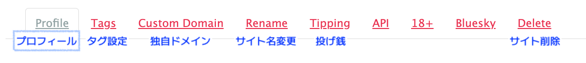
Profile / プロフィール
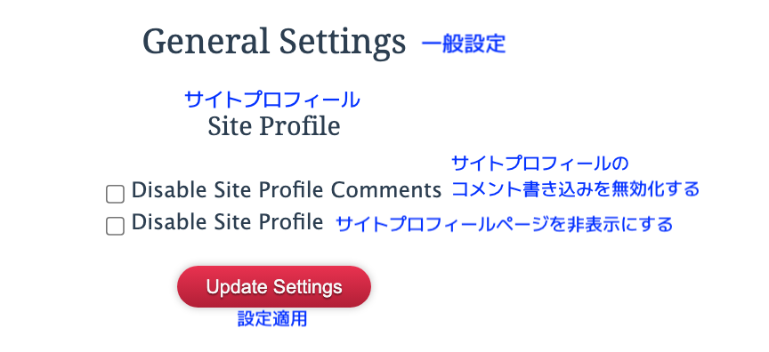
- General Settings
- 一般設定
- Site Profile
- サイトプロフィール
- Disable Site profile Comments
- サイトプロフィールのコメント書き込みを無効化する
- Disable Site Profile
- サイトプロフィールページを非表示にする
- Update Settings
- 設定を適用
Tags / タグ
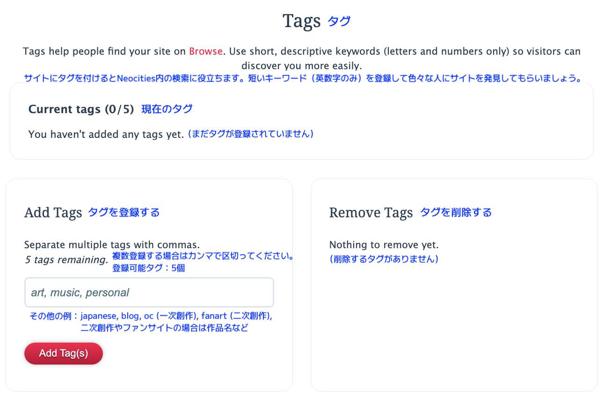
- Tags help people find your site on Browse. Use short, descriptive keywords (letters and numbers only) so visitors can discover you more easily.
- サイトにタグを付けるとNeocities内の検索に役立ちます。短いキーワード（英数字のみ）を登録して色々な人にサイトを発見してもらいましょう。
- Current Tags
- 現在のタグ
- Add Tags
- タグを登録する
- Separate multiple tags with commas.
- 複数登録する場合は間まで区切ってください。
art, music, personal- 絵、音楽、パーソナル（個人サイト）
その他のタグ例：japanese, blog, oc (一次創作), fanart (二次創作), 二次創作サイトやファンサイトの場合は作品名など
- Remove Tags
- タグを削除する
Custom Domain / 独自ドメイン
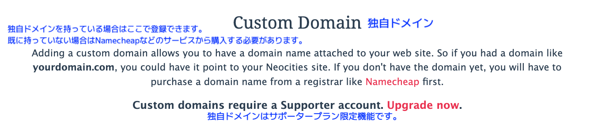
- Adding a custom domain allows you to have a domain name attached to your web site. (中略)
If you don't have the domain yet, you will have to purchase a domain name from a registrar like Namecheap first. - 独自ドメインを持っている場合はここで登録できます。既に持っていない場合はNamecheapなどのサービスから購入する必要があります。
- Custom Domains require a Supporter account. Upgrade now.
- 独自ドメインはサポータープラン限定機能です。（プラン変更リンク）
Rename / サイト名変更
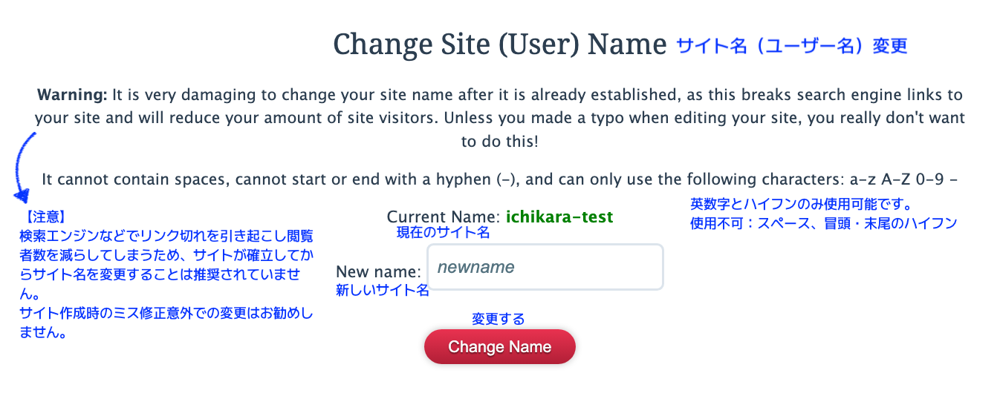
- Change Site (User) Name
- サイト名（ユーザー名）変更
- Warning: It is very damaging to change your site name after it is already established, as this breaks search engine links to your site and will reduce your amount of site visitors. Unless you made a typo when editing your site, you really don't want to do this!
- 【注意】検索エンジンなどでリンク切れを引き起こし、閲覧者数を減らしてしまうため、サイトが確立してからサイト名を変更することは推奨されていません。
サイト作成時のミス修正以外での変更はお勧めしません。 - It cannot contain spaces, cannot start or end with a hyphen (-), and can only use the following characters: a-z A-Z 0-9 -
- 英数字とハイフンのみ使用可能です。（a-z A-Z 0-9 -）
使用不可：スペース、冒頭・末尾のハイフン - Current name
- 現在のサイト名
- New name
- 新しいサイト名
- Change Name
- 変更する
Tipping / 投げ銭
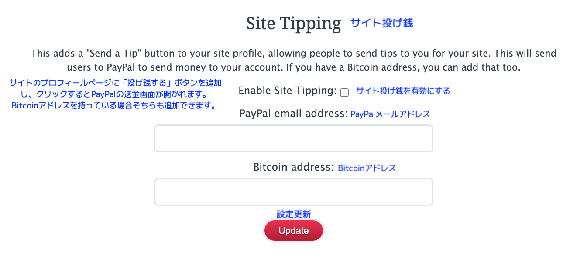
- Site Tipping
- サイト投げ銭
- This adds a "Send a Tip" button to your site profile, allowing people to send tips to you for your site. This will send users to PayPal to send money to your account. If you have a Bitcoin address, you can add that too.
- サイトのプロフィールページに「投げ銭する」ボタンを追加し、クリックするとPayPalの送金画が開かれます。Bitcoinアドレスを持っている場合そちらも追加できます。
- Enable Site Tipping
- サイト投げ銭を有効にする
- PayPal email address
- PayPalメールアドレス
- Bitcoin address
- Bitcoinアドレス
- Update
- 設定更新
API
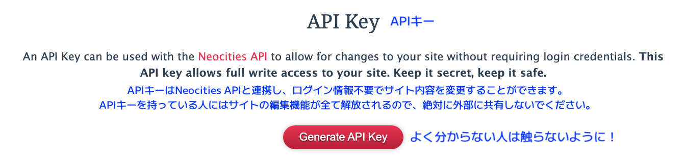
- API Key
- APIキー
- An API Key can be used with the Neocities API to allow for changes to your site without requiring login credentials. This API key allows full write access to your site. Keep it secret, keep it safe.
- APIキーはNeocities APIと連携し、ログイン情報不要でサイト内容を変更することができます。APIキーを持っている人にはサイトの編集機能が全て解放されるので、絶対に外部に共有しないでください。
- Generate API Key
- APIキーを作成する
よく分からない人は触らないように！！
18+
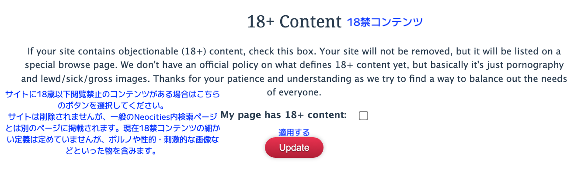
- 18+ Content
- 18禁コンテンツ
- If your site contains objectionable (18+) content, check this box. Your site will not be removed, but it will be listed on a special browse page. We don't have an official policy on what defines 18+ content yet, but basically it's just pornography and lewd/sick/gross images.（略）
- サイトに18歳以下覧禁止のコンテンツがある場合はこちらのボタンを選択してください。
サイトは削除されませんが、一般のNeocities内検索ページとは別のページに掲載されます。現在18禁コンテンツの細かい定義は定めていませんが、ポルノや性的・刺激的な画像などといった物を含みます。 - My page has 18+ content
- 本サイトは18禁コンテンツを含みます
- Update
- 適用する
Bluesky
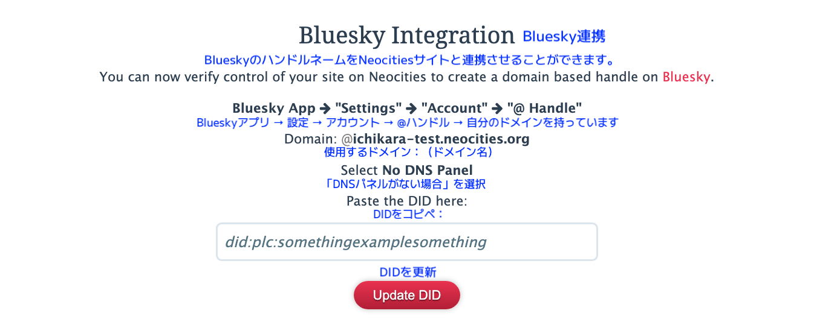
- Bluesky Integration
- Bluesky連携
- You can now verify control of your site on Neocities to create a domain based handle on Bluesky.
- BlueskyのハンドルネームをNeocitiesサイトと連携させることができます。
- Bluesky App → "Settings" → "Account" → "@ Handle"
- Blueskyアプリ → 設定 → アカウント → @ハンドル → 自分のドメインを持っています
- Domain
- 使用するドメイン
- Select No DNS Panel
- 「DNSパネルがない場合」を選択
- Paste the DID here
- DIDをコピペしてください
- Update DID
- DIDを更新
Delete Site / サイト削除
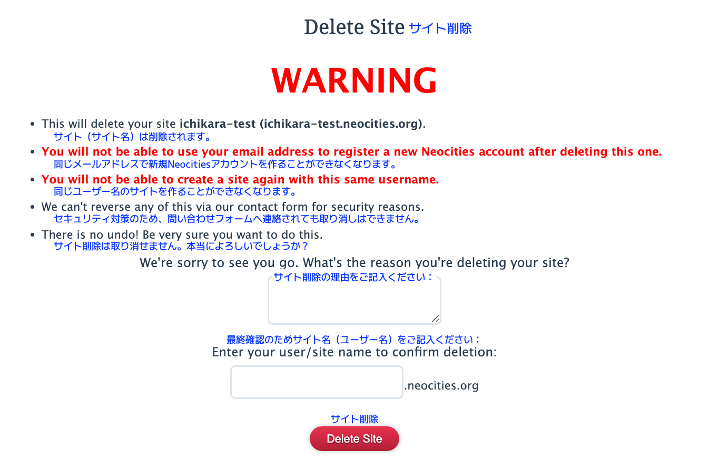
- WARNING
- 【注意】
- This will delete your site (site name/URL).
- サイト（サイト名）は削除されます。
- You will not be able to use your email address to register a new Neocities account after deleting this one.
- 同じメールアドレスで新規Neocitiesアカウントを作ることができなくなります。
- You will not be able to create a site again with this same username.
- 同じユーザー名のサイトを作ることができなくなります。
- We can't reverse any of this via our contact form for security reasons.
- セキュリティ対策のため、問い合わせフォームへ連絡されても取り消しはできません。
- There is no undo! Be very sure you want to do this.
- サイト削除は取り消せません。本当によろしいでしょうか？
- We're sorry to see you go. What's the reason you're deleting your site?
- サイト削除の理由をご記入ください
- Enter your user/site name to confirm deletion:
- 最終確認のためサイト名（ユーザー名）をご記入ください
- Delete Site
- サイト削除

更新履歴
2026.01.09 - 公開